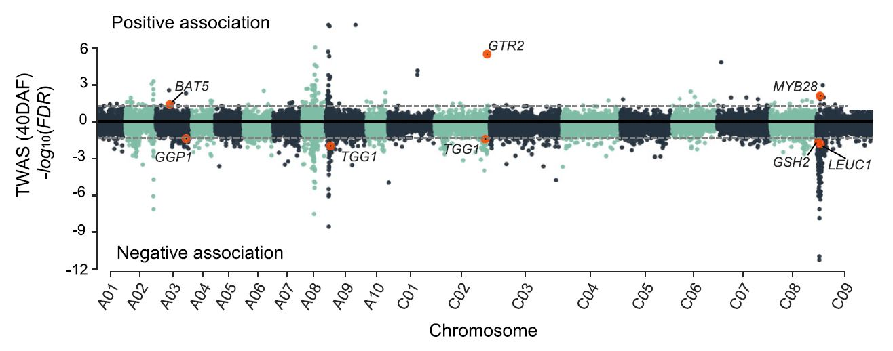

什么？EMMAX也能做全转录组关联分析（Transcriptome-wide Association Study，TWAS）
全基因组关联分析从正向遗传学的角度出发，探究“基因型-表型”之间的关联，近年来在人类疾病和作物产量、品质以及抗逆等多方面的遗传机理研究中发挥重要作用。然而由于连锁不平衡（Linkage Disequilibrium，LD）的存在，我们很难直接从 GWAS 结果中找到和表型相关的因果变异（causal variant）或候选基因。尤其在自交作物中，由于 LD 衰减较慢，这一问题更加突出。全转录组关联分析（Transcriptome-wide Association Study，TWAS）通过分析基因表达量的变异与性状表型之间的关联，从而在某种程度上直接捕捉调控层面的遗传效应，因此更容易定位潜在功能基因。正因为其在定位候选基因方面具有这样的优势，众多 TWAS 分析方法得以提出并应用于大量遗传学研究，例如 PrediXcan、FUSION 等方法对于关注 TWAS 的老师和同学来说并不陌生[1]。
随着测序成本的不断下降，TWAS 在植物遗传学领域的研究案列也在不断增加，例如在一篇关于甘蓝型油菜种子中硫苷含量的研究中，作者结合 GWAS 和 TWAS 探究了控制种子硫苷含量的位点，并对其中一个候选基因 BnaC02.GTR2 进行验证[2]。然而在实验方法部分我们看到，该该研究使用的是经典 GWAS 软件 EMMAX 来进行 TWAS 分析。EMMAX 使用混合线性模型（Mixed Linear Model，MLM），作为 GWAS 分析的常用软件为人所熟知[3]，也是老王在最开始进行关联分析学习时接触的第一个 GWAS 分析软件。但 EMMAX 并非主流 TWAS 工具，那么 EMMAX 是如何用于 TWAS 研究呢？
输入文件
EMMAX 使用 tped/tfam 格式作为基因型输入文件，我们自然而然地会想是否是把表达量矩阵整理成类似 tped 格式呢？这个思路是对的，然而在实际运行的时候我们会发现 EMMAX 会报错退出。原因也很显然，基因型是离散变量，而表达量是连续性变量。
1 | |
那么该如何解决这一问题呢？当我们仔细阅读 EMMAX 软件的在线文档时，可以看到有小段提到可以使用 dosage 值作为输入，但数值范围需要在 0~2 之间，并且提到了一个在软件帮助文档中没有提到的参数 -Z。
Running EMMAX with dosages
If you add -Z option, it will accept .tped file format, where each individual is represented as one dosage value (ranging from 0 to 2), instead of two genotype columns, (which is one of the standard PLINK dosage format). You will be able to run EMMAX with this model. But when creating the kinship matrix, you will not be able to use dosage-based genotypes.
在 TWAS 场景下，我们将表达量按样本缩放至 0~2 范围，使其形式上可被视为“连续型 dosage”，从而被 EMMAX 接受，尽管此时无法基于 dosage 构建亲缘矩阵（kinship）。按照这一思路，我们对表达量矩阵中每个基因在不同样本的表达量进行转换并整理成 tped/tfam 格式，加上 -Z 参数重新运行 EMMAX 可以得到输出结果。可以看到该结果与文章中结果整体一致。


进一步讨论：TWAS 信号峰是否意味着 causal 基因？
开头我们提到 GWAS 由于 LD 的存在导致的定位精度问题，TWAS 通过引入表达调控层面的信息，可以帮助缩小候选基因范围、提高候选基因预测的可信度。然而在本文中 TWAS 例子中我们看到在 A08、A09、C02 以及 C09 染色体上都存在类似 GWAS 结果的簇状峰，那么是否说明这些区域超出显著性阈值的基因都是引起表型变异的 causal 基因吗？我想这显然是不太可能的。种子中的硫苷会降低油菜饼粕的饲用价值，现代油菜”双低（低芥酸，低硫苷）“育种使不断选择“低硫苷”性状，油菜基因组中与硫苷含量相关 QTLs 位点受到强烈选择，这些受选择区域形成较大的 LD block。处于同一 haplotype 的多个基因往往具有一致（或相反）的表达趋势，因此在 TWAS 中可能同时被检测为显著基因。这些基因并非都具有直接功能，而是在 LD 结构影响下共同表现出关联信号。换句话说：在具有强选择或大 LD block 的区域，TWAS 与 GWAS 都可能出现区域性信号，而非单一的候选基因。
因此，无论是 GWAS 还是 TWAS，结果的可靠解释仍需结合 LD 结构、群体历史、基因功能注释、变异影响预测以及进一步的实验验证等多方面信息综合判断。
原文及参考文献链接
- Wainberg, M., Sinnott-Armstrong, N., Mancuso, N., Barbeira, A. N., Knowles, D. A., Golan, D., Ermel, R., Ruusalepp, A., Quertermous, T., Hao, K., Björkegren, J. L. M., Im, H. K., Pasaniuc, B., Rivas, M. A., & Kundaje, A. (2019). Opportunities and challenges for transcriptome-wide association studies. Nature genetics, 51(4), 592–599. https://doi.org/10.1038/s41588-019-0385-z ↩
- Tan, Z., Xie, Z., Dai, L., Zhang, Y., Zhao, H., Tang, S., Wan, L., Yao, X., Guo, L., & Hong, D. (2022). Genome- and transcriptome-wide association studies reveal the genetic basis and the breeding history of seed glucosinolate content in Brassica napus. Plant biotechnology journal, 20(1), 211–225. https://doi.org/10.1111/pbi.13707 ↩
- Kang, H. M., Sul, J. H., Service, S. K., Zaitlen, N. A., Kong, S. Y., Freimer, N. B., Sabatti, C., & Eskin, E. (2010). Variance component model to account for sample structure in genome-wide association studies. Nature genetics, 42(4), 348–354. https://doi.org/10.1038/ng.548 ↩